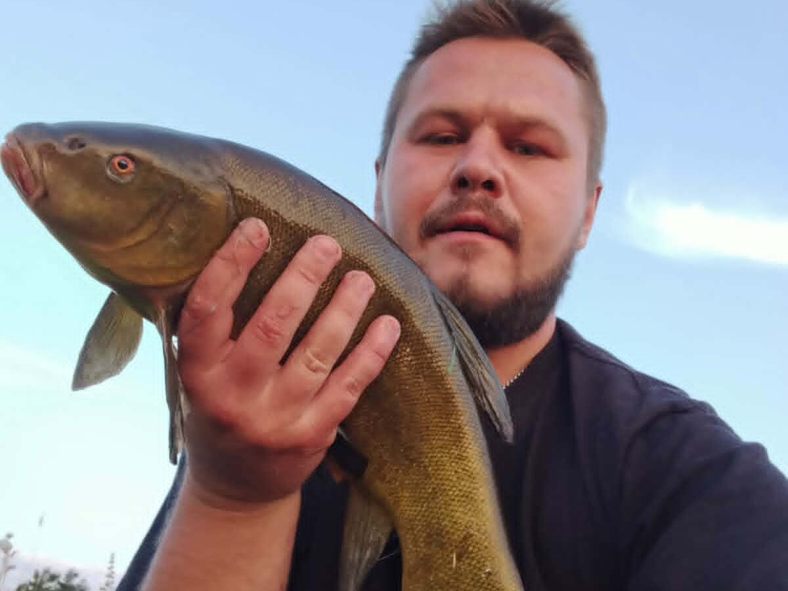

Rozpoznawanie i biologia
Wygląd i rozpoznawanie
Lin (Tinca tinca) to krępa, mocno zbudowana ryba karpiowata o krótkim, wysokim trzonie ogonowym i zaokrąglonych płetwach, które nadają mu charakterystyczną, „miękką” sylwetkę. Ciało pokrywa bardzo drobna, głęboko osadzona w skórze łuska oraz gruba warstwa śluzu, przez co ryba w dłoni sprawia wrażenie niemal gładkiej. Ubarwienie jest oliwkowozielone do ciemnobrązowego, często ze złotawym połyskiem, a tęczówka oka ma wyraźnie czerwony lub pomarańczowoczerwony kolor — to jedna z najpewniejszych cech rozpoznawczych. W kącikach pyska znajdują się dwa krótkie wąsiki. Samce mają wyraźnie pogrubione, łyżkowato wygięte płetwy brzuszne, co pozwala łatwo rozróżnić płeć. Lin mylony bywa rzadko; teoretycznie pomylić go można z ciemno ubarwionym karasiem lub małym karpiem, ale drobna łuska, śluz, czerwone oko i zaokrąglone płetwy nie pozostawiają wątpliwości.

Środowisko i występowanie w Polsce
Lin występuje na terenie całej Polski nizinnej, choć nigdzie nie tworzy tak masowych populacji jak płoć czy leszcz. Typowe linowe wody to płytkie, żyzne jeziora o mulistym dnie, starorzecza, glinianki, torfianki, stawy oraz spokojne, zarośnięte zatoki zbiorników zaporowych i wolno płynące odcinki rzek. Kluczowa jest dla niego roślinność podwodna — pasy grążeli, rdestnic, moczarki i trzcinowisk — w której znajduje pokarm i schronienie. Lin jest wyjątkowo odporny na deficyty tlenowe i wysokie temperatury, dzięki czemu zasiedla wody, w których inne gatunki radzą sobie słabo, w tym płytkie zbiorniki podatne na przyduchy. Prowadzi osiadły tryb życia i trzyma się niewielkich rewirów; rzadko spotyka się go w nurcie i na twardym, piaszczystym dnie z dala od roślin. Część populacji w wodach PZW podtrzymywana jest zarybieniami.

Biologia i tarło
Lin dojrzewa płciowo zwykle w wieku trzech do czterech lat. Tarło jest późne i rozciągnięte w czasie — rozpoczyna się, gdy woda nagrzeje się do około 19–20 stopni Celsjusza, czyli najczęściej od końca maja do lipca, a ikra składana bywa porcjami w kilku turach. Samica składa lepką ikrę na roślinności podwodnej w płytkich, nagrzanych partiach zbiornika. Liczba ziaren ikry jest duża, jednak przeżywalność wylęgu silnie zależy od pogody i presji drapieżników. Lin rośnie wolno: ryba czterdziestocentymetrowa ma zwykle przynajmniej kilkanaście lat, a tempo wzrostu mocno zależy od żyzności wody i konkurencji pokarmowej. Dożywa kilkunastu, niekiedy ponad dwudziestu lat. Zimę spędza w stanie silnego spowolnienia, często częściowo zagrzebany w mule, niemal nie pobierając pokarmu.
Żerowanie według pór roku
Lin żeruje przy dnie, przekopując miękkie osady w poszukiwaniu larw ochotek, skąposzczetów, drobnych mięczaków i skorupiaków; uzupełnia dietę miękkimi częściami roślin. Sezon linowy zaczyna się na dobre późną wiosną, gdy woda przekroczy kilkanaście stopni — wtedy ryby wychodzą na płytkie, nagrzane partie przy roślinności. Wczesnym latem, w okresie okołotarłowym i po tarle, żerowanie bywa najintensywniejsze. W pełni lata lin trzyma się stałych pór: najpewniejsze są świt, wczesny ranek i zmierzch, podczas gdy w środku upalnego dnia ryby stoją w roślinach i żerują niechętnie. Jesienią aktywność stopniowo gaśnie wraz z ochłodzeniem wody, choć ciepłe okresy września i października potrafią jeszcze dawać dobre wyniki. Zimą brania linów należą do rzadkości. Żerujący lin często zdradza swoją obecność charakterystycznymi ciągami drobnych pęcherzyków wznoszących się z dna — to jedna z najcenniejszych wskazówek dla obserwującego wodę wędkarza.
Przepisy i ochrona
Przepisy krajowe i zasady lokalne
Przepisy krajowe: Wody śródlądowe: wymiar 25 cm; § 7 nie ustanawia krajowego okresu ochronnego. Źródło: Dz.U. 2023 poz. 1373, § 6–7
Granica okresu ochronnego: jeżeli pierwszy lub ostatni dzień okresu przypada w dzień ustawowo wolny od pracy, okres skraca się o ten dzień (§ 7 ust. 2); wyjątkiem jest całoroczna ochrona jesiotra.
Przed połowem: sprawdź aktualny regulamin i zezwolenie dla konkretnej wody. Wymiar, okres, limit lub zakaz lokalny może być ostrzejszy; brak wartości krajowej nie oznacza zgody na zabranie ryby.
Metody, taktyka i sprzęt
Metody i przynęty: spławik, grunt, feeder
Klasyką połowu lina jest delikatny zestaw spławikowy podawany tuż przy roślinności: czuły, smukły spławik o niewielkiej wyporności, żyłka 0,16–0,22 mm, niewielki haczyk nr 8–14 i przynęta prezentowana na dnie lub tuż nad nim. Brania lina bywają długie i „mamroczące” — spławik drga, kładzie się i wędruje, zanim ryba pewnie zabierze przynętę, dlatego nie należy się spieszyć z zacięciem. Skuteczny jest również lekki grunt i feeder z krótkim koszykiem oraz przyponem 30–60 cm, szczególnie na większych jeziorach i przy łowieniu poza zasięgiem tyczki; method feeder z miękkim pelletem dobrze sprawdza się na wodach z presją karpia. Z przynęt najpewniejsze są białe i czerwone robaki, dendrobeny, pęczek ochotki, kukurydza oraz ciasto; na wodach linowo-karpiowych działają też miniboilies i drobny pellet. Większa przynęta, na przykład pęczek robaków, pomaga selekcjonować lepsze ryby spośród drobnicy.

Taktyka łowienia i nęcenie
Lin jest rybą płochliwą i przywiązaną do miejsca, więc taktyka opiera się na wyborze właściwego punktu i ciszy na stanowisku. Najlepsze miejsca to okna i ścieżki w roślinności, granica trzcin i otwartej wody, skraj pasa grążeli oraz miękkie zatoczki o głębokości od jednego do trzech metrów. Bardzo dobre wyniki daje przygotowanie stanowiska: delikatne wykoszenie lub wygrabienie niewielkiego placka dna i systematyczne nęcenie go przez kilka dni o porze planowanego łowienia.
Zanęta powinna być ciemna, ciężka i bogata w składniki zwierzęce — sprawdzają się mieszanki z dodatkiem ochotki, sieczki robaków i kukurydzy; jasna, pyląca zanęta ściąga głównie drobnicę. Nęcimy oszczędnie, bo przekarmiony lin szybko traci zainteresowanie haczykiem. Charakterystyczne bąbelkowanie nad nęconym miejscem zwykle zapowiada obecność żerujących ryb. Po zacięciu lin walczy uparcie i z dużą siłą jak na swoje rozmiary, próbując wejść w rośliny, dlatego pierwsze sekundy holu wymagają zdecydowania. Nawet najlepsza taktyka nie gwarantuje brań — zwiększa jedynie ich prawdopodobieństwo.
Rekordy, kuchnia i ciekawostki
Rekordy Polski — orientacyjnie
Rejestry wędkarskie notują w Polsce liny o masie około 3–4 kg jako ryby wybitne, a rekordowe okazy z rejestrów i prasy wędkarskiej oscylują w okolicach 4,5–5 kg i długości przekraczającej 60 cm. Dane te warto traktować ostrożnie, ponieważ pochodzą z różnych źródeł i okresów, a warunki ważenia ryb bywały nieporównywalne. W praktyce lin powyżej 2 kg jest już na większości wód rybą okazałą, a sztuki ponad 3 kg należą do rzadkości i zwykle pochodzą z żyznych, mało eksploatowanych jezior, starorzeczy lub stawów o bogatej bazie pokarmowej. Wolny wzrost gatunku sprawia, że duże liny są rybami starymi, kilkunasto- lub ponaddwudziestoletnimi, co stanowi dodatkowy argument za ich wypuszczaniem.
Wartość kulinarna i zasady C&R
Mięso lina jest białe, delikatne i tradycyjnie wysoko cenione — w dawnej kuchni polskiej lin uchodził za przysmak, podawany między innymi w śmietanie lub po żydowsku. Ości jest mniej dokuczliwych niż u leszcza czy karpia, choć drobna łuska i śluz wymagają starannego oczyszczenia; ryby z wód mulistych mogą mieć posmak, który niweluje się przetrzymaniem ryby w czystej wodzie. Coraz więcej wędkarzy wypuszcza jednak liny ze względu na wolny wzrost i lokalnie nieliczne populacje. Przy zasadzie „złów i wypuść” kluczowa jest ochrona śluzu, który stanowi naturalną barierę ochronną ryby: lina bierzemy wyłącznie mokrymi rękami, najlepiej wypinamy haczyk w wodzie lub nad miękką, mokrą matą, skracamy do minimum czas na powietrzu i rezygnujemy z trzymania ryby w suchej siatce. Rybę przeznaczoną do zabrania uśmiercamy humanitarnie i tylko w granicach wymiarów oraz limitów obowiązujących na danej wodzie.
Ciekawostki
Lin bywał dawniej nazywany „rybim doktorem” — wierzono, że jego śluz ma właściwości lecznicze i że chore ryby ocierają się o liny, by się kurować; nauka tego nie potwierdza, ale legenda przetrwała w wędkarskim folklorze. Gatunek słynie z wyjątkowej wytrzymałości: znosi spadki tlenu i temperatury wody, które dla większości ryb byłyby zabójcze, a w wysychających zbiornikach potrafi przetrwać pewien czas zagrzebany w wilgotnym mule. W hodowli stawowej istnieje złota odmiana lina o pomarańczowozłotym ubarwieniu, chętnie wpuszczana do oczek wodnych. Lin został introdukowany na wielu kontynentach, między innymi w Australii i Ameryce Północnej, gdzie miejscami uznawany jest za gatunek inwazyjny. Co ciekawe, mimo ospałego wyglądu w holu należy do najwaleczniejszych ryb spokojnego żeru w swojej kategorii wagowej.
FAQ — najczęstsze pytania
Kiedy najlepiej łowić lina?
Statystycznie najlepszym okresem jest późna wiosna i wczesne lato, od maja do lipca, gdy woda jest już ciepła, a ryby intensywnie żerują przy roślinności. W skali doby najpewniejsze są świt z wczesnym rankiem oraz zmierzch; w pochmurne, parne dni lin potrafi żerować także w ciągu dnia. To jednak tylko prawidłowości, nie gwarancja — lokalny rytm łowiska bywa odmienny i warto go rozpoznać obserwacją.
Jak odróżnić branie lina od brań drobnicy?
Drobnica zwykle szarpie spławikiem szybko i chaotycznie, natomiast branie lina jest charakterystycznie powolne: spławik drga, podnosi się, kładzie i dopiero po chwili rusza pewnie w bok lub tonie. Częstą zapowiedzią brania są też pęcherzyki gazu nad nęconym miejscem. Z zacięciem warto poczekać do wyraźnego, zdecydowanego ruchu spławika, bo lin długo „smakuje” przynętę.
Czy lina trzeba łowić na bardzo delikatny zestaw?
Zestaw powinien być delikatny w prezentacji, ale nie słaby. Lin walczy mocno i ucieka w rośliny, więc żyłka poniżej 0,16 mm na zarośniętej wodzie kończy się zwykle stratą ryby i zestawu. Rozsądny kompromis to żyłka 0,18–0,22 mm, mocny haczyk i wędka o miękkiej szczytówce, lecz z zapasem mocy w dolnej części, która pozwala zatrzymać pierwszy odjazd.
Czy nęcenie z wyprzedzeniem naprawdę pomaga?
Tak, w przypadku lina nęcenie wstępne przez dwa-trzy dni w stałym punkcie i o stałej porze należy do najskuteczniejszych elementów taktyki, bo ryba jest osiadła i przyzwyczaja się do regularnego pokarmu. Ważny jest umiar: niewielkie, powtarzalne porcje ciemnej zanęty z dodatkami zwierzęcymi działają lepiej niż jednorazowe zasypanie łowiska. Pamiętaj, że nawet dobrze przygotowane stanowisko nie daje pewności brań.
Źródła i weryfikacja
Powyższe treści mają charakter przeglądowy i edukacyjny. Podane wymiary ochronne, okresy ochronne i limity dobowe są orientacyjne i opierają się na ogólnych zasadach Polskiego Związku Wędkarskiego na dzień publikacji — poszczególne okręgi PZW i gospodarze wód stosują własne, często odmienne regulaminy, w tym różne wymiary i konstrukcje limitów dla lina. Przed każdym połowem zweryfikuj aktualne przepisy w posiadanym zezwoleniu, regulaminie właściwego okręgu oraz na stronie pzw.org.pl. Opisane metody i taktyki nie stanowią gwarancji wyników połowu. Zobacz też: kalendarz brań lina — kiedy bierze najlepiej.
Tożsamość biologiczna i źródła
Nazwa łacińska: Tinca tinca. Grupa atlasu: spokojny żer. Alias: tench.
Źródła: FishBase: Tinca tincaGBIF: Tinca tincaIUCN Red List: Tinca tinca. Dostęp: 2026-07-17. Zakres: tożsamość taksonomiczna i nazewnictwo oraz, gdy wskazano, ocena ochrony; bez potwierdzenia lokalnego występowania, stanu łowiska ani zasad połowu.
Porównanie taksonomiczne
Porównaj z kartą Karaś pospolity. Obie karty prowadzą do osobnych rekordów źródłowych; porównanie nie jest kluczem oznaczania w terenie ani gwarancją wyniku połowu.